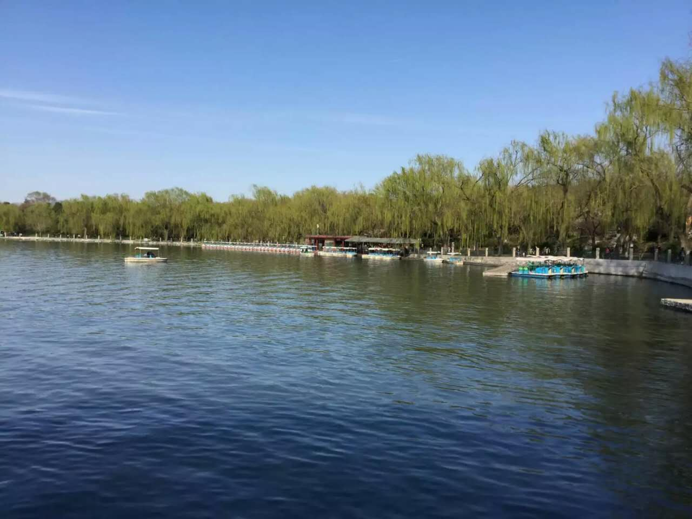

在写景状物的文章中，孤立地写动态或静态，往往不能给人以深刻的印象。若能将动态描写与静态描写结合起来，以静写动，以动衬静，则会塑造出栩栩如生的文学场景。
漓江的水真静啊，静得让你感觉不到它在流动；漓江的水真清啊，清得可以看见江底的沙石；漓江的水真绿啊，绿得仿佛是一块无瑕的翡翠。船桨激起的微波，扩散出一道道水纹，才让你感觉到船在前进，岸在后移。
这样的山拱围着这样的水，这样的水倒映着这样的山，山水间又有这样变幻无穷的洞，加上空中云雾迷蒙，山间绿树红花，江上蓑笠渔人，白鹭竹筏，让你感到像是走进了连绵不断的画卷，真是“舟行碧波上，人在画中游”。
